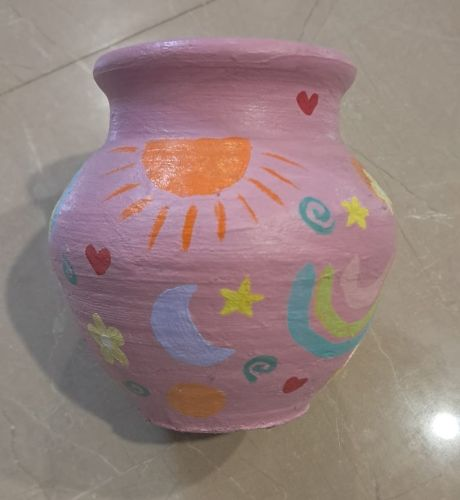

Urvi's Personal Site : Painting Hobby
Art is my quiet space where I can express thoughts and feelings that don’t always come out in words. I’ve been painting for a while now, experimenting with watercolours and acrylics. Some days I try to recreate what I see, and other days, I just let my mind wander and see what happens on paper. I try not to paint for perfection, but because it makes me feel calm and creative.
In the picture above, I gave an old pot a little makeover! I found the design idea on Pinterest.